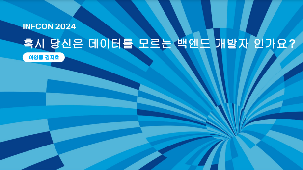
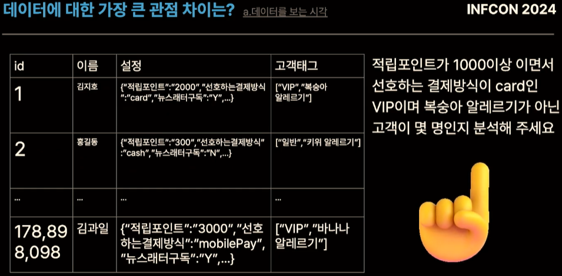
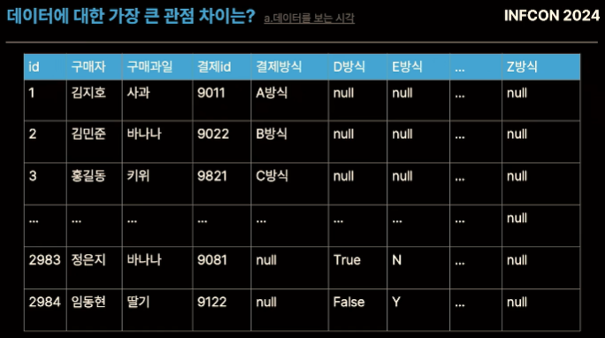
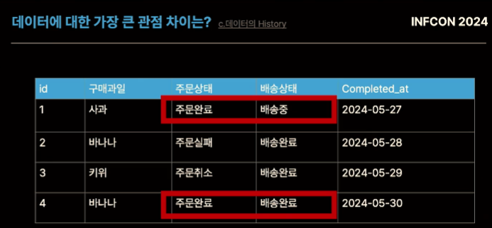

인프콘에서 들었던 ‘혹시 당신은 데이터를 모르는 백엔드 개발자인가요’ 세션 내용정리
개요
- 인프콘 세션 듣고 간단히 정리
혹시 당신은 데이터를 모르는 백엔드 개발자인가요(김지호 님)
- 인프콘 다시보기 사이트

세션내용 정리
직무/팀에 따른 데이터에 대한 관점 차이
데이터에 대한 접근
- 백엔드 엔지니어 : CRUD(CREATE READ UPDATE DELETE)
- 데이터 팀 : AIRFLOW, DATA LAKE, OLAP, HADOOP 등
행 vs 열
- 백엔드 엔지니어 : 행을 잘 읽고 쓰는게 중요
- 고객1이 어떤 물건을 얼마에 샀는지를 보는게 중요
- 데이터팀 : 열을 잘 보는게 중요
- 비즈니스 인사이트를 위한 부분. 어떤 품목이 몇개나 팔렸나 등
- 열 기준의 데이터 관점을 잘 알게되었을 때의 장점
- 데이터 분석비용 감소, 확장성/생산성 증가
데이터에 대한 관점차이로 발생하는 문제
- 예시) 분석비용의 증가
- 엔지니어 : 행 데이터를 nested json, array 등으로 처리하는 것이 간편
- 데이터 분석가 : 비즈니스 분석시 열 단위 분석한 아래와 같은 경우.
- 아래와 같은 경우, row의 각 json 등을 모두 스캔해야하여 분석 비용이 많이 들 수 있음 
- 정규화를 통한 해결, 앞으로 이 데이터가 분석에 쓰일 것인가를 고민
- 안쓰일 것이라면 json으로도 문제가 되지 않겠지만, 그렇지 않다면 문제
- 다만 대부분은 쓰일 것으로 예상됨
- 예시) 생산성의 감소
- 엔지니어 : 결제방식 컬럼의 DB Comment(설명)이 없어 알 수 없는 상황 + 기존 결제방식(비즈니스)에 영향을 줄 수 있음
- 이후 새로운 결제방식은 boolean인 컬럼으로 추가 
- 데이터 분석가 : 분석을 하려고 하니, 결제방식컬럼과 함께, 다른 타입의 결제방식 컬럼들이 다수 존재하여 어려움
- 데이터 카탈로그를 통해, 데이터에 대한 설명 등을 문서화하며 검색가능하도록 통합관리
- ’결제’와 같은 키워드 검색시, 테이블 이름/설명/컬럼명/문서 등을 출력
- 데이터 카탈로그 등을 구축하지 못한다면, 적어도 Comment라도 남기기
- 데이터가 어디에서 왔는지 등을 함께 명시
- 엔지니어 : 결제방식 컬럼의 DB Comment(설명)이 없어 알 수 없는 상황 + 기존 결제방식(비즈니스)에 영향을 줄 수 있음
대용량 트래픽 vs 대용량 데이터
- 엔지니어 : 대용량 트래픽을 고객에게 에러 발생없이 제공하는 것이 중요
- 데이터 분석가 : 테이블 당 데이터의 수(row)가 많고 일반적인 RDBMS는 쿼리 등이 어려울 수 있음
- 분산처리 등이 중요해짐
- 단순히 DB에 쓰고 지우는 것이 데이터관리의 전부는 아님
- Live Production DB에 무거운 분석쿼리를 날린다면, 고객의 쿼리 등이 중단/지연될 수 있음
- 분석환경은 분리해서 운용
- Live Production DB에 무거운 분석쿼리를 날린다면, 고객의 쿼리 등이 중단/지연될 수 있음
데이터의 무결성
- GIGO : 잘못된 데이터를 넣고 좋은 결과가 나올 수는 없음
- 데이터의 무결성을 지킨 데이터 필요
- 유효성 : 정의된 범위에서 데이터 발생
- 문제예시 - 유료서비스의 활성화 기간을 분석하고자 ’만료일’을 확인하고자 함
- 비즈니스 로직 변경으로, Application에서만 저장되던 데이터를 엔지니어가 직접 일괄로 변경함
- 프로모션 적용/컴플레인 대응/환불요청 등을 위해 고객센터 등에서 처리한 데이터 (로그가 남지 않음)
- 문제예시 - 유료서비스의 활성화 기간을 분석하고자 ’만료일’을 확인하고자 함
- 정확성 : 실제 값을 정확하게 나타냄
- 문제예시 - 유저 데이터의 물리삭제(회원탈퇴)
- 탈퇴한 회원의 DELETE쿼리 실행
- 회원의 탈퇴가 Human error인 경우
- 유저의 활동을 통해 서비스 중인 현황을 분석하고자 할 때, 데이터가 없다면 분석 자체가 불가
- 데이터의 저장비용(삭제)과 데이터의 가치(보존)에 대한 고민이 들 수 있음
- 향후 어떻게 쓰일 지 알 수 없으므로 저장하는 것이 좋을 수 있음
- 문제예시 - 유저 데이터의 물리삭제(회원탈퇴)
- 일관성 : 1개 컬럼은 1개의 값을 가져야 함
- 문제예시 - 완료시점(Completed_at)을 하나의 컬럼으로 함께 사용하여, 후에 어떤 컬럼의 완료인지 알기 어려움
- Completed_at을 함께사용하는 주문/배송 컬럼 
- 문제예시 - 완료시점(Completed_at)을 하나의 컬럼으로 함께 사용하여, 후에 어떤 컬럼의 완료인지 알기 어려움
- 유효성 : 정의된 범위에서 데이터 발생
Copyright © 2024 Kibok Park All rights reserved.